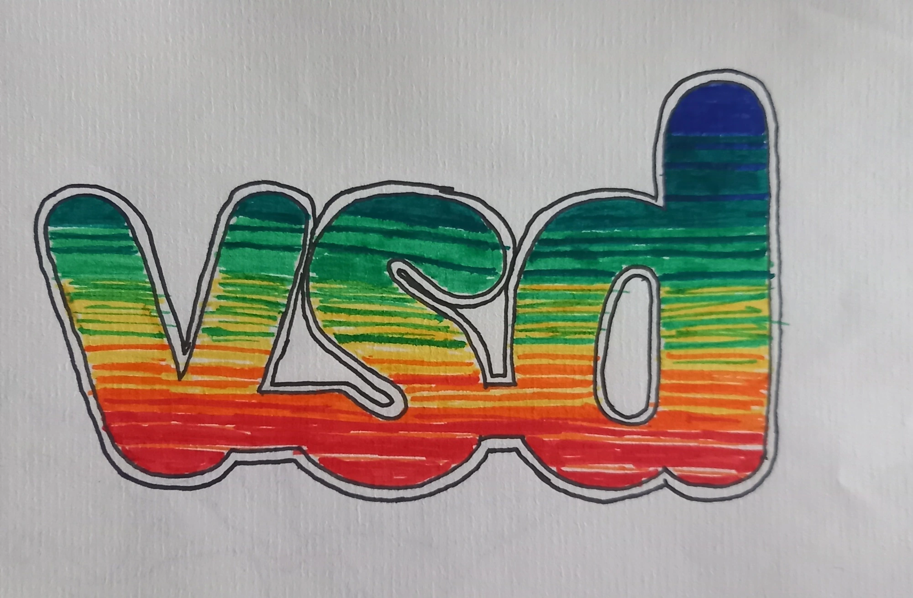
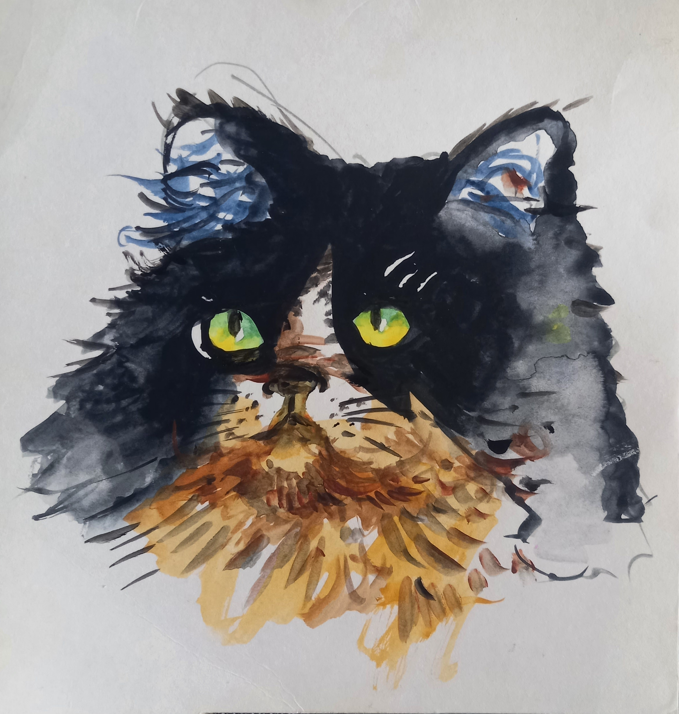
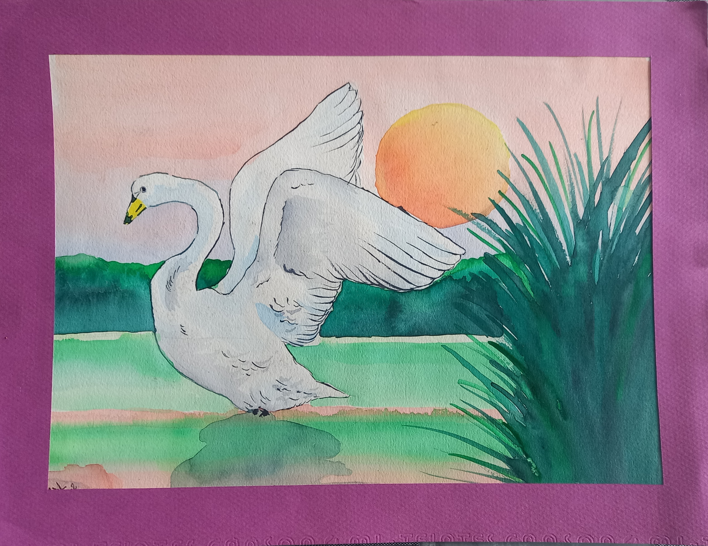
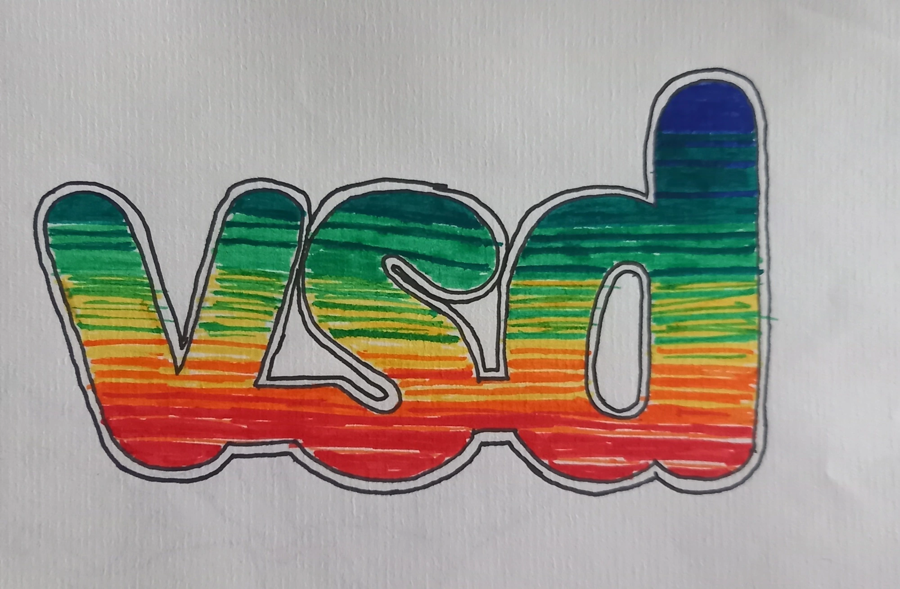
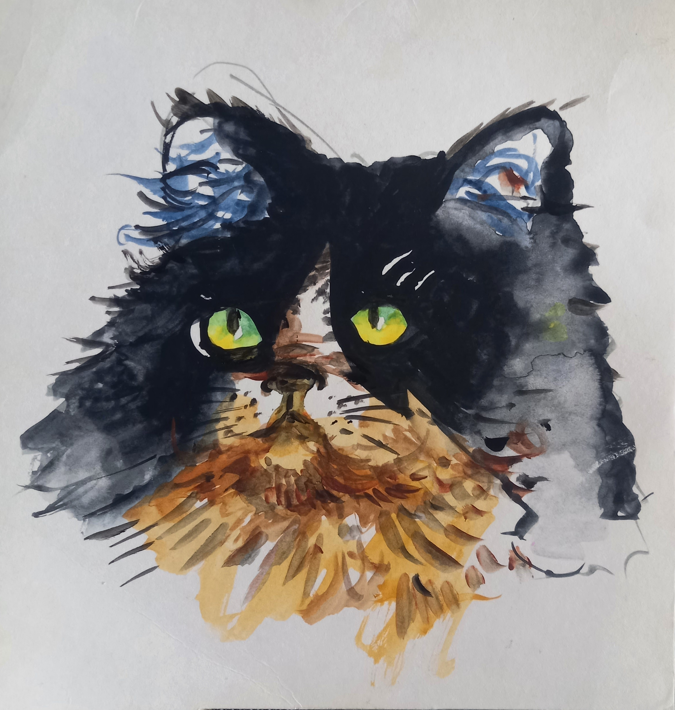
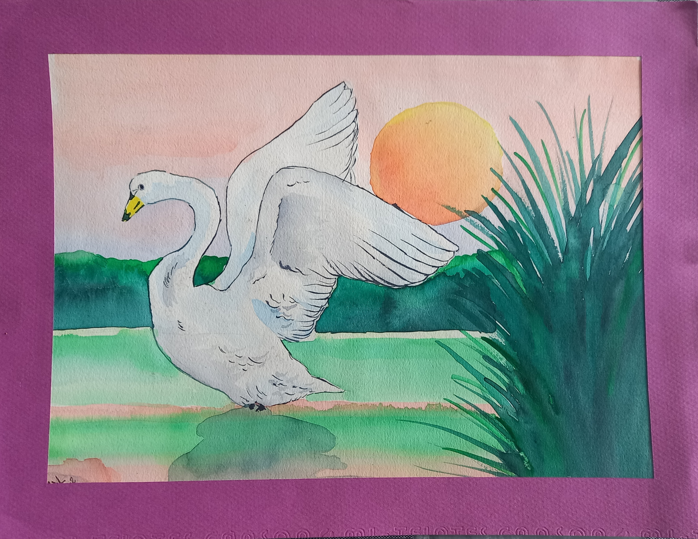
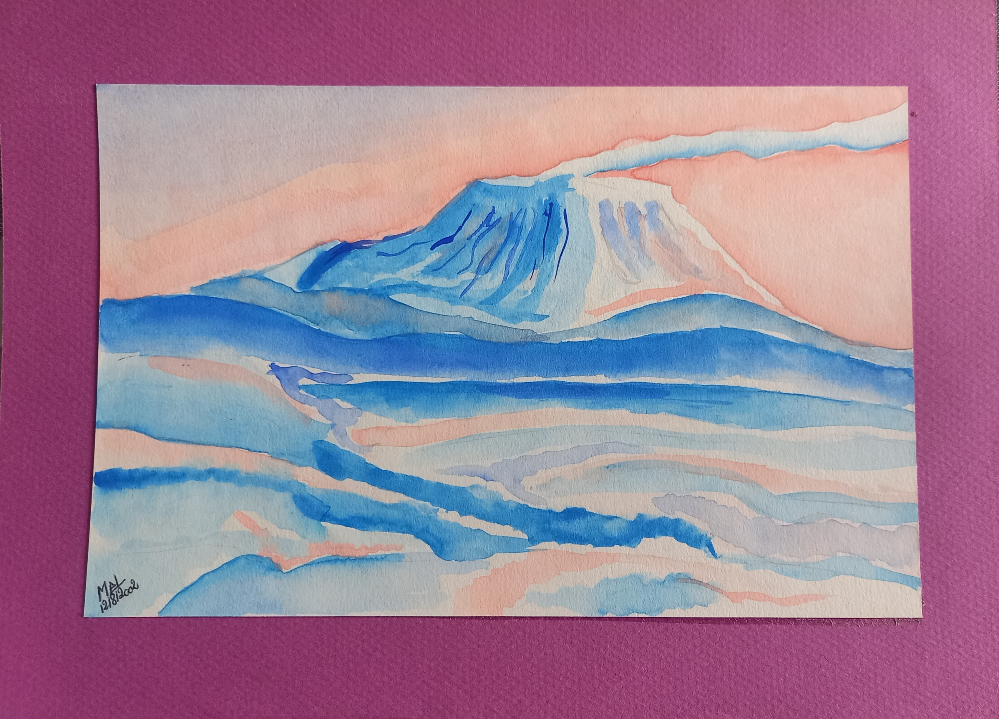
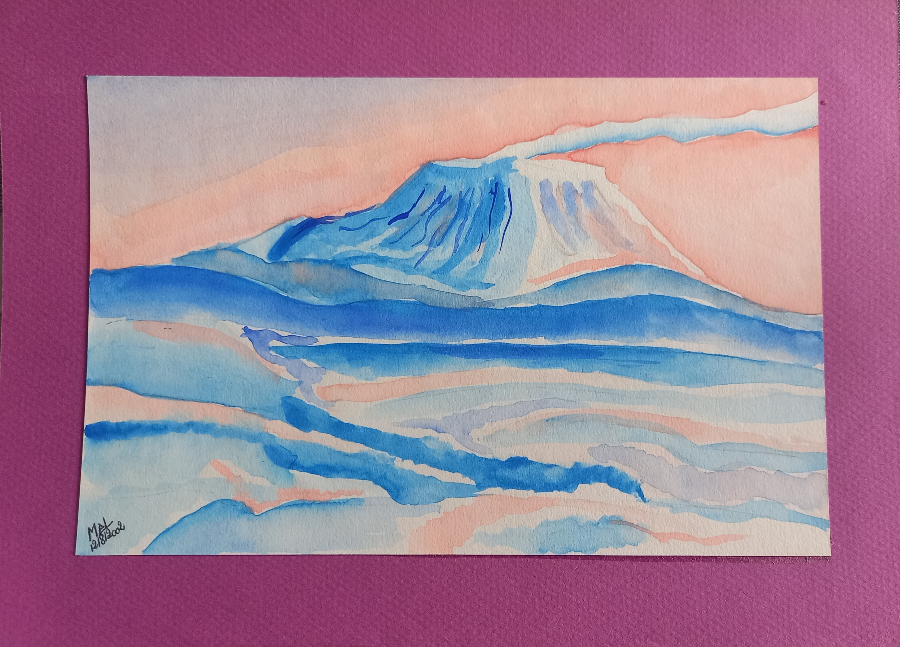

Bonjour !!
Après plusieurs années d'expériences en tant qu'infographiste, le marché du travail, étant moindre, j'ai décidé de me reconvertir dans le développement web et web mobile.
Ma passion pour le développement et le design met ma créativité et mes compétences techniques au service de projets innovants.
Toujours en quête de nouveaux défis, j’aime apprendre, expérimenter et collaborer pour donner vie à des idées ambitieuses.
📩 Contactez-moi pour discuter de vos projets !


 





 
